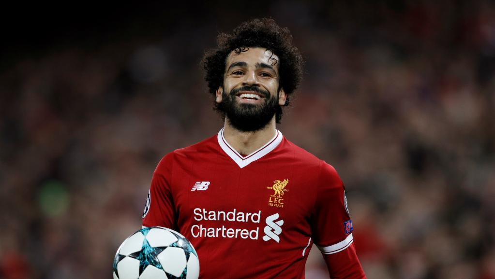

MUSIC

The Beatles
The Beatles were an English rock band formed in Liverpool in 1960. The line-up of John Lennon, Paul McCartney, George Harrison and Ringo Starr led the band to be regarded as the foremost and most influential in history.
Dewa 19
Dewa 19 (Pronounced in Indonesian Dewa sembilan belas), often referred to as Dewa, were an Indonesian rock band originating from Surabaya, East Java. The band was formed in 1986 there have been a number of changes to the lineup and finally they were disbanded in 2011. Their last members lineup were: Ahmad Dhani, Andra, Agung Yudha, Yuke, & Once.
The Cranberries
The Cranberries were an Irish rock band formed in Limerick, Ireland in 1989 by lead singer Niall Quinn, guitarist Noel Hogan, bassist Mike Hogan, and drummer Fergal Lawler. Quinn was replaced as lead singer by Dolores O'Riordan in 1990.
U2
U2 are an Irish rock band from Dublin, formed in 1976. The group consists of Bono (vocals), the Edge (guitar and backing vocals), Adam Clayton (bass guitar), and Larry Mullen Jr. (drums and percussion).
Paramore
Paramore is an American rock band from Franklin, Tennessee, formed in 2004. The band currently consists of lead vocalist Hayley Williams, guitarist Taylor York and drummer Zac Farro.
Barasuara
Barasuara is an Indonesian Alternative Rock band consists of Iga Massardi (Vocal / Guitar), Gerald Situmorang (Bass), TJ Kusuma (Guitar), Asteriska (Vocal), Puti Chitara (Vocal) and Marco Steffiano (Drum). They released their debut album titled ‘Taifun’ in 2015. With various singles such as “Bahas Bahasa” and “Sendu Melagu”.
SPORT
Lionel G.O.A.T. Messi
Lionel Andrés Messi is an Argentine professional footballer who plays as a forward and captains both Spanish club Barcelona and the Argentina national team. Often considered the best player in the world and regarded by many as the greatest player of all time.

Mohammed Salah
Mohamed Salah Hamed Mahrous Ghaly is an Egyptian professional footballer who plays as a forward for Premier League club Liverpool and the Egypt national team. Considered one of the best players in the world, he is known for his finishing, dribbling, and speed.
Ricardo Kaka
Ricardo Izecson dos Santos Leite commonly known as Kaká or Ricardo Kaká, is a Brazilian retired professional footballer who played as an attacking midfielder. Owing to his performances at Milan where he was an elite playmaker, Kaká is widely considered one of the best players of his generation. With success at club and international level, he is one of eight players to have won the FIFA World Cup, the UEFA Champions League and the Ballon d'Or.
TECH
Artificial Intelligence
Artificial Intelligence (AI) refers to computers systems built to mimic human intelligence and perform tasks such as recognition of images, speech or patterns and decision making. AI can do these tasks faster and more accurately than humans.
Machine Learning
Machine learning is an application of artificial intelligence (AI) that provides systems the ability to automatically learn and improve from experience without being explicitly programmed. Machine learning focuses on the development of computer programs that can access data and use it learn for themselves.
Google Stadia
Stadia is a cloud gaming service operated by multinational technology company Google. According to Google, it is capable of streaming video games in 4K resolution at 60 frames per second with support for high-dynamic-range, to players via the company's numerous data centers across the globe, provided they are using a sufficiently high-quality Internet connection.